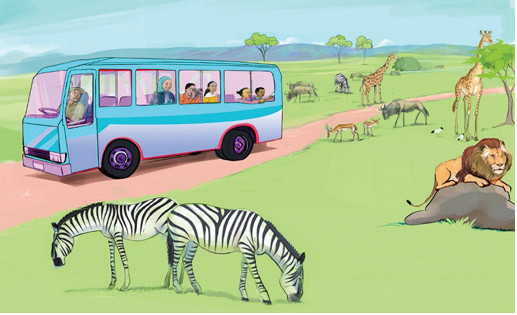

Allen and Pendo lived with their parents in Moshi. Last holiday, they travelled to Mkunguni village where their grandparents live. They went there to visit their grandparents. That day, Allen and Pendo woke up very early in the morning. They were supposed to board a bus. They reported at the bus stand at 6:30 in the morning. There were many other passengers at the bus stand.
Allen and Pendo checked in at 7:10 a.m., boarded the bus at 7:30, and departed at 7:30 in the morning. The driver drove very carefully. On the way to the village, the bus crossed Rau river and national parks. In one of the national parks, Allen and Pendo saw many animals. There were lions, zebras, elephants, giraffes, and monkeys. The monkeys were jumping from one tree to another. One giraffe was eating leaves from one of the tall trees in the park. Allen and Pendo were very excited to see the animals. They were busy pointing at different animals.